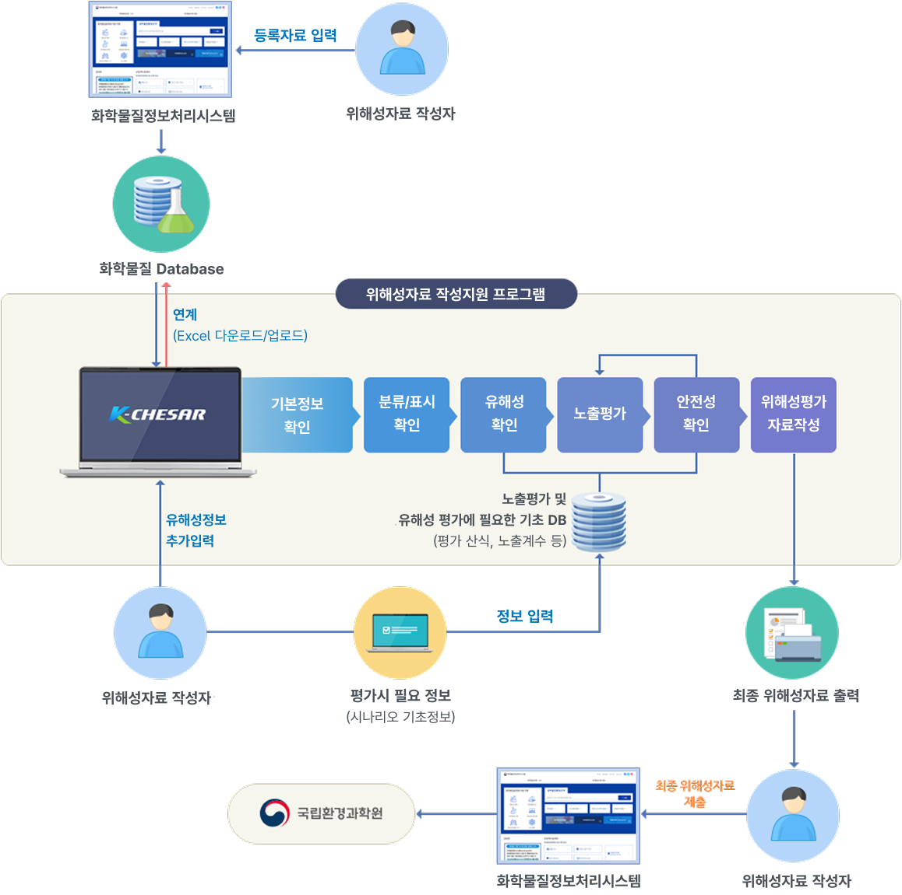

프로그램 개요
배경 및 목적
위해성자료 작성지원 프로그램 (K-CHESAR)
K-CHESAR : Korea CHEmical Safety Assessment and Reporting tool
한국형 노출평가 모델이 탑재된 ‘위해성자료 작성’ 지원 프로그램
배경 및 목적
「화학물질의 등록 및 평가 등에 관한 법률」에 따라 화학물질을 연간 10톤 이상 제조∙수입하려는 자는 ‘화학물질의 위해성에 관한 자료’ 작성 및 제출 의무화→ 산업계의 위해성자료 작성을 지원하기 위하여 작성지원 프로그램 개발 및 배포
K-CHESAR 특징
1. 화학물질정보처리시스템(화평법IT)과 연계
연계기능을 통해 동일물질에 대한 자료 중복작성의 번거로움 해소
2. 분류 및 표시 정보 연계
'유해화학물질의 분류 및 표시 등에 관한 규정'에 따라 고시된 화학물질의 분류·표시 정보 연계
3. 사용자 편의성 도모
- '화학물질의 위해성에 관한 자료 작성지침'을 반영하여 K-Chesar 사용만으로 유해성자료 입력부터 안전성 확인까지 위해성 자료 작성 및 평가 가능
- 노출평가 모델을 탑재하여 환경·인체·소비자 노출평가 모델을 각각 구동해야 하는 불편 해소
- 별도 편집 없이 보고서 출력 가능
K-CHESAR 구성도

위해성자료 작성 단계별 EU CHESAR와 K-CHESAR간 비교
| 작성단계 | EU-CHESAR | K-CHESAR |
|---|---|---|
| 물질정보 및 유해성자료 입력 |
|
|
| 유해성 평가 |
|
|
| 노출시나리오 |
|
|
|
|
|
| 노출평가 |
|
|
|
|
|
| 위해성관리대책 |
|
|
| 기타 |
|
|